Here, we show how to perform automatic and manual image registration in order to align different recording sessions from a given subject. This process is useful for longitudinal studies where different animals are imaged several times over the course of the experiment.
In this example you will learn:
The raw data consists of multi-channel (fluorescence and reflectance) recordings of an anesthetized mouse expressing GCaMP6 calcium indicator in cortical neurons. The data that we will align consists of four resting state recordings (see this tutorial to learn how to process resting state data) of one mouse acquired over a period of 2 months. Here is the processing workflow of this example:
Recording alignment workflow
Important
The automatic and manual alignemnt tools are currently available only in the main GUI (umIToolbox)!
Here, we assume that the project file was created. For more info on how to create a project file click here. To open a project file, call the umIToolbox app with the full path to your project file as input as:
umIToolbox('C:/FOLDER/projectfile.mat');
In the main GUI, go to the Pipeline control panel tab and select the recordings to be processed (steps 1 and 2) and launch the Pipeline Configuration app (step 3). Here, we will align all four recordings from the mouse M4D:
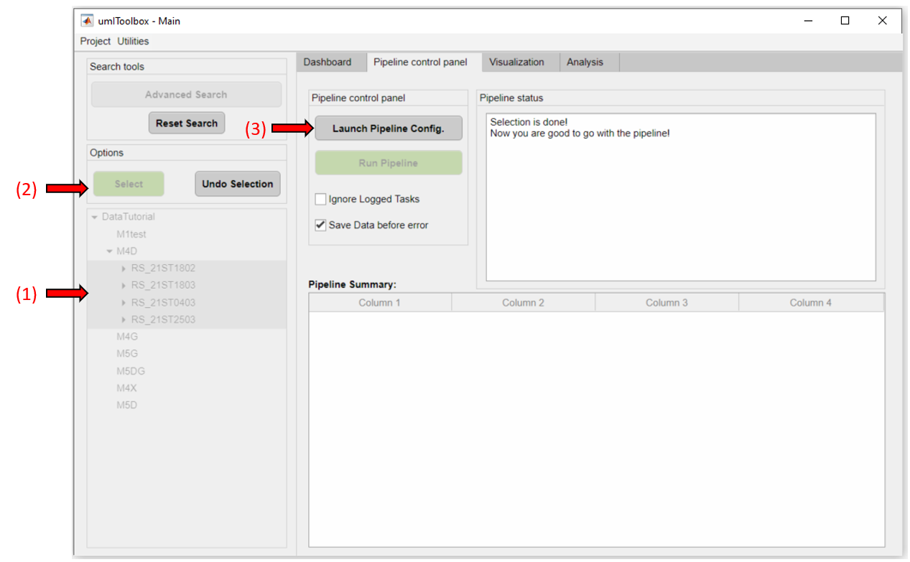Select the FluorescenceImaging object from the list of available objects:
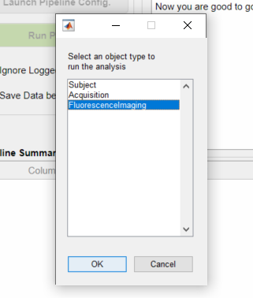In the Pipeline Configuration app, add the data import function run_ImagesClassification and the hemodynamic correction function run_HemoCorrection. In this case, we will use the default parameters from both of them. Finally, click on the green button "Save Config" to finish creating the pipeline:
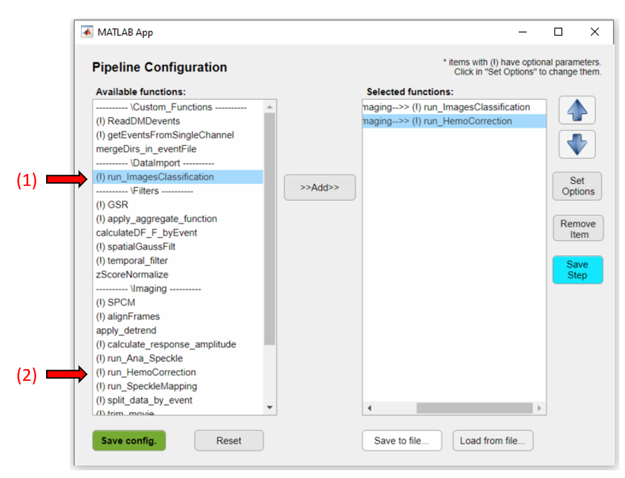Back in the main GUI, click on Run Pipeline to import the raw data from the selected recordings. Once the data import is finished, we move on to the creation of the reference frame.
In the previous section, we imported the fluorescence and reflectance data, and used the latter to separate the hemodynamic signal from the fluorescence one. The corrected fluorescence data is stored in the file hemoCorr_fluo.dat. Now, we will choose one of the four recordings to create the reference frame for the alignment.
Tip
Any channel (fluorescence or any of the reflectance channels) can be used as reference frame for the alignment process. However, the automatic alignment algorithm works better with images having a good contrast between the brain tissue and the blood vessels such as the green(reflectance) and fluorescence channels. In the present case, we will use the fluorescence channel to create the reference frame.
In the main GUI, go to the Visualization tab and select the recording to be the reference. In our case, we selected the recording RS_21ST1803 to be the reference. Then, in the Select a file list box, click on the fluo.dat file. The reference frame is created using the ROImanager app. Click on the app's button to open it:
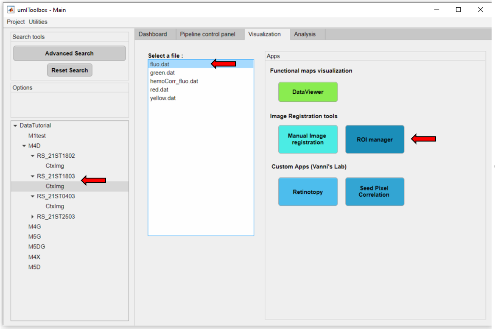Below is a snapshot of the ROImanager interface with a sample frame of the fluorescence data file fluo.dat:
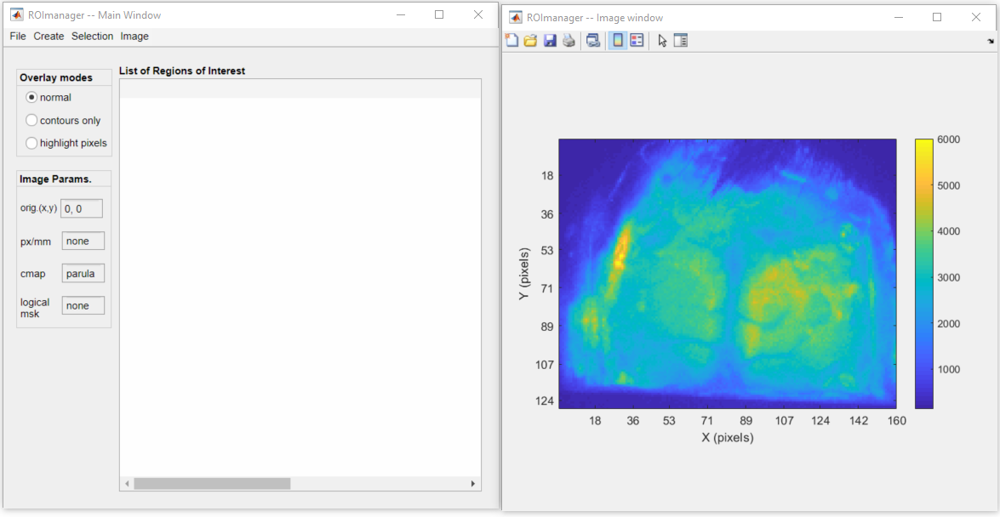Note
The Imaging Reference Frame file carries more than a simple image frame used for alignment. For instance, one can use this file to store information such as the image's pixel ratio (in px/mm), the coordinantes of a reference point (e.g. in mice, generally the Bregma is used as reference point). In addition, one can also create and store a logical mask used in other analysis functions when one needs to exclude pixels that lie outside the brain. In this example, we will go through the steps to create and store the abovementioned information in our Imaging Reference Frame file.
Creating an image reference frame for alignment is only one of the features of the ROImanager app. For more in-depth information on the app, check it's documentation here!
Here are the next steps that will be performed to create the Imaging Reference Frame file:
To draw a new reference point, go to Image >> Set origin >> New. Follow the instructions to select the point. Here, we selected the Bregma as our reference point:
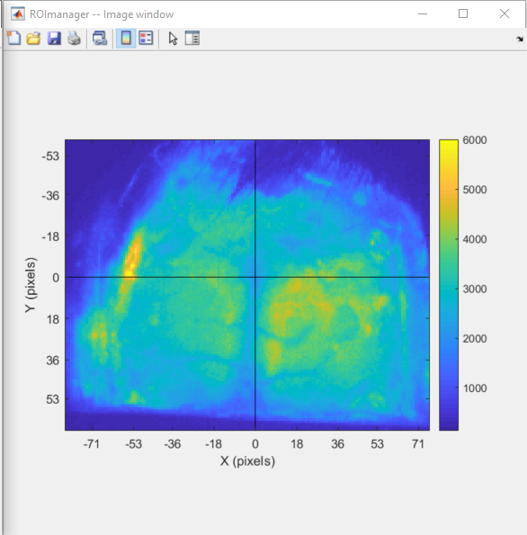Now, notice that the mouse's cortical surface is not properly aligned (it is slightly rotated to the right). To fix this go to Image >> Set origin >> Align image to origin. Click the highlighted point and place it over a point where it should be vertically aligned with the reference point:
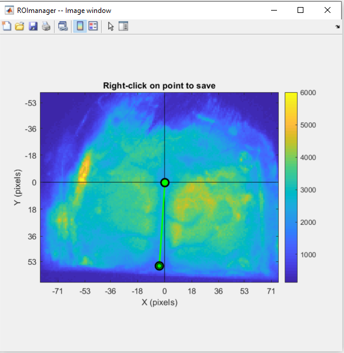Right-click over the point to and confirm the image rotation. Below we can see the rotated frame:
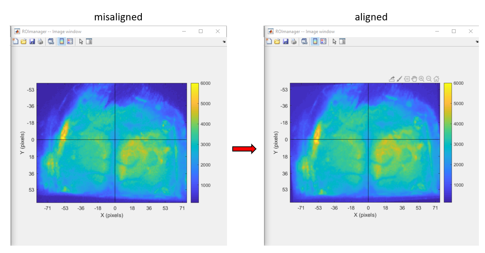To set the pixel ratio, go to Image >> Set pixel size. In the dialog box, type the pixel ratio:
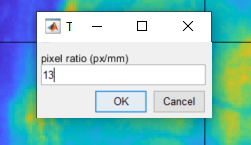When the pixel size is set, the axis is automatically rescaled to millimeters:
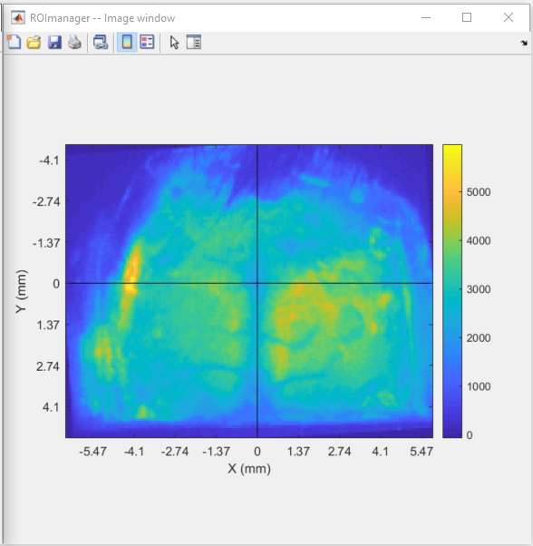Note
The pixel ratio is not strictly essential to perform the alignment ot to run the currently available analysis functions. However, if you have this information, it is a good practice to include it in the Imaging Reference Frame file.
A logical mask can be created when there are regions of the image that you want to exclude in the analysis. For instance, in our case, the periphery of the image consists of pixels that lie outside the mouse cortex. Thus, we can draw a mask to delimit the cortex and exclude everything else.
Note
Please, note that the logical mask creation and use is not a destructive process. This means that the imaging data is not deleted or transformed when the mask is created. Instead, the mask is used by some analysis functions to indicate which pixels will be considered in the analysis.
To draw a new logical mask go to Image >> Mask >> Draw new. You can set up to 10 regions as a mask. In our case, we will create one region delimiting the visible cortex:
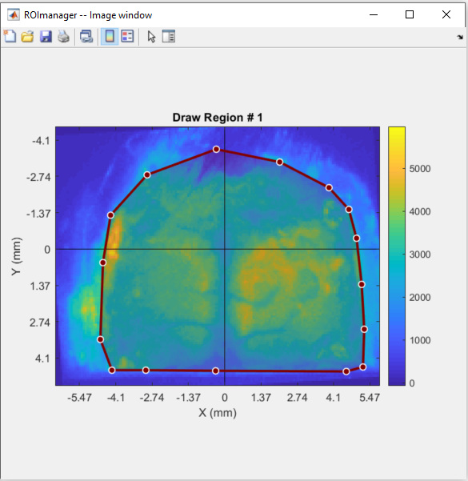Once finished drawing the region, double-click inside it to save. The saved mask will appear as a highlighted region over the image:
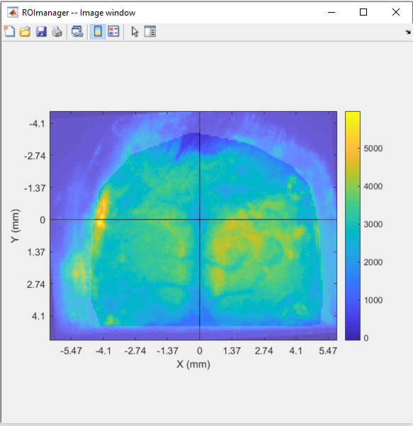Now that the frame was aligned, all it's information was set and the logical mask was created, we can save everything to the Imaging Reference Frame file. To do so, go to Image >> Image Reference file... >> Export. A file named ImagingReferenceFrame.mat will be automatically created in the subject's save folder:
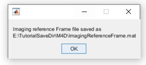